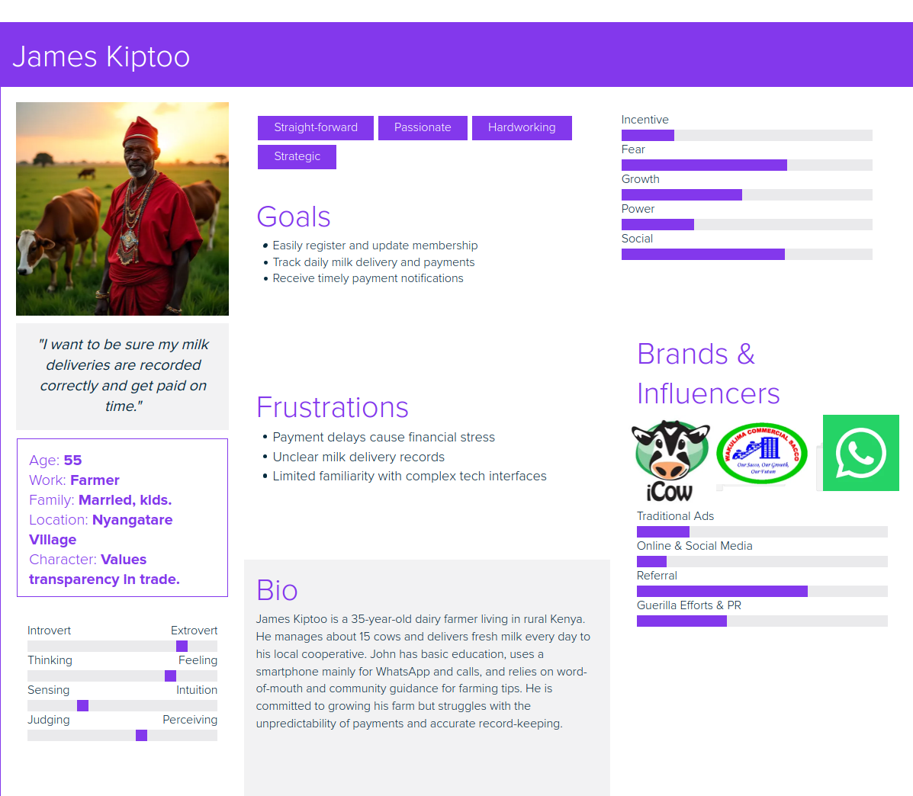
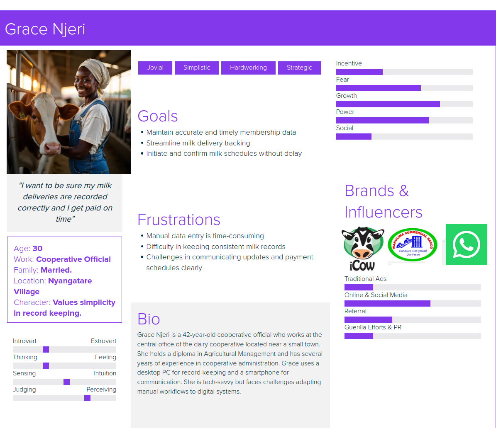

User / Buyer Personas
1. Farmer

- Demographics: Small to medium-scale dairy farmer, typically aged 25-55, rural location
- Goals: Easily register and maintain membership, track milk deliveries, receive timely payments, monitor production progress
- Pain Points: Delayed payments, lack of transparency in delivery records, difficulty accessing cooperative services
- Technology Usage: Uses a smartphone or basic computer; prefers simple UI for registration and notifications
2. Cooperative Official

- Demographics: Administrator or manager of dairy cooperatives, aged 30-60, mid-level technical proficiency
- Goals: Manage member records, track and validate milk deliveries, initiate payments, analyze cooperative performance
- Pain Points: Time-consuming manual processes, data inconsistencies, payment delays, member communication challenges
- Technology Usage: Regular user of desktop or laptop, familiar with CRM/admin interfaces